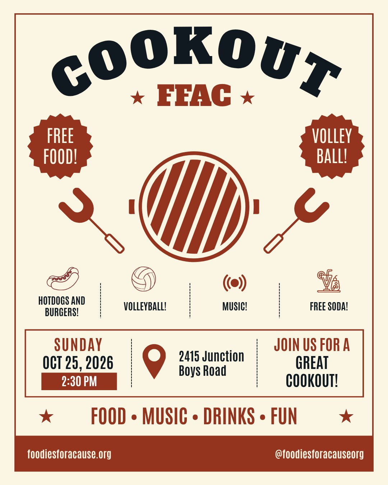

Social
FFAC Cookout
- When
- Sunday, October 25, 2:30 PM
- Where
- 2415 Junction Boys Road
- Co-host
- TAMU HOSA
Free hotdogs, burgers, and soda, plus music and volleyball. Co-hosted with TAMU HOSA, our first collaboration event.